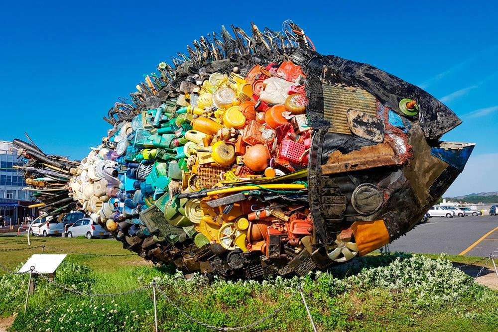
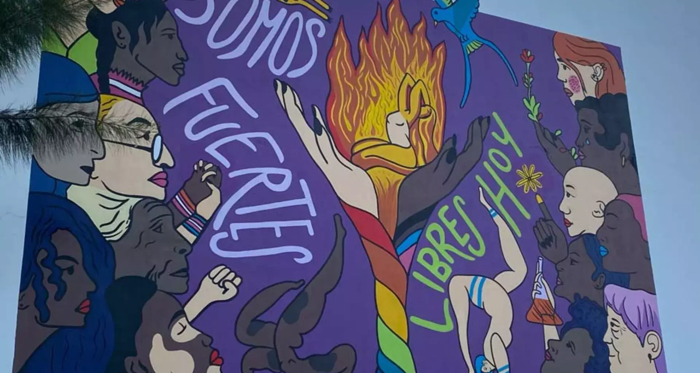
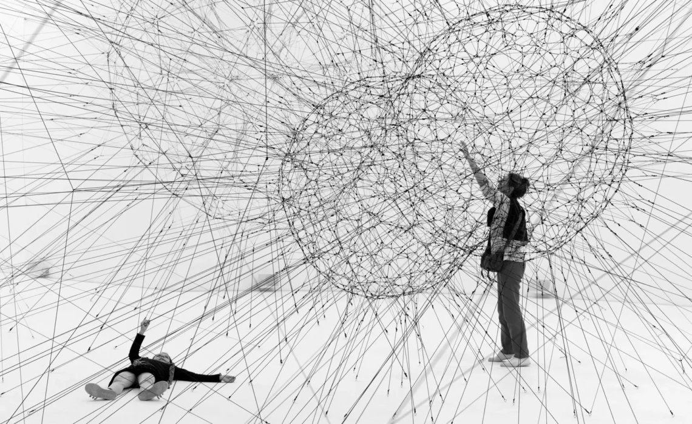
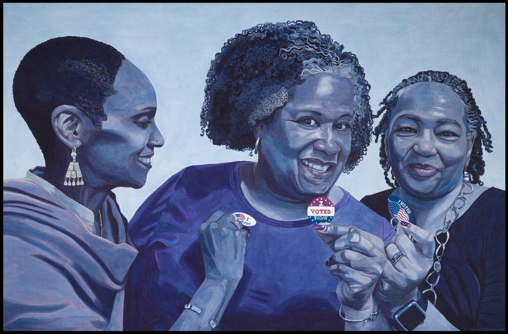
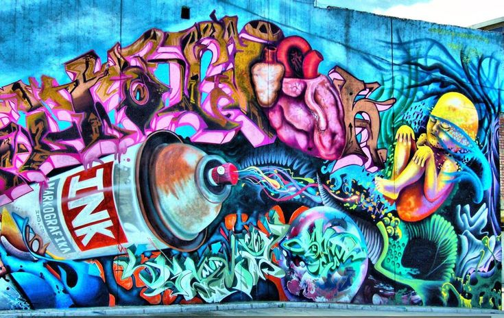

Tendencias actuales en el Arte Contemporáneo
el arte contemporáneo está en constante evolución, siempre reflejando las inquietudes y los cambios de la sociedad moderna. Pero, ¿qué tipo de arte contemporáneo se mueve actualmente?
el arte contemporáneo está en constante evolución, siempre reflejando las inquietudes y los cambios de la sociedad moderna. Pero, ¿qué tipo de arte contemporáneo se mueve actualmente?
La preocupación por el medio ambiente ha influido en el mundo del arte, dando lugar a un movimiento hacia el arte sostenible. Los artistas están utilizando materiales reciclados y técnicas ecológicas para crear sus obras. Esta tendencia no solo reduce el impacto ambiental, sino que también genera conciencia sobre temas ecológicos y de sostenibilidad entre el público.
 Saber másLa diversidad y la inclusión son temas centrales en el arte contemporáneo. Los artistas están explorando y representando diversas identidades y experiencias, desafiando las normas y abriendo espacios para voces tradicionalmente marginadas. Este enfoque inclusivo en el arte fomenta una mayor comprensión y apreciación de diferentes culturas y perspectivas.
 Saber másLa tecnología sigue desempeñando un papel crucial en el arte contemporáneo. La realidad aumentada (AR) y la realidad virtual (VR) están siendo utilizadas para crear experiencias inmersivas que desafían las percepciones tradicionales del arte. Estas tecnologías permiten a los espectadores interactuar con obras de arte de formas innovadoras, ampliando los límites de lo que es posible en el ámbito artístico.
 Saber másAunque el arte abstracto ha dominado durante décadas, hay un resurgimiento del interés por el arte figurativo. Artistas contemporáneos están reinterpretando el arte figurativo con enfoques modernos y temáticas actuales, fusionando técnicas tradicionales con nuevas perspectivas. Este renacimiento está capturando la atención tanto de críticos como de coleccionistas.
 Saber másEl arte urbano y el grafiti han pasado de ser considerados actos de vandalismo a ser reconocidos como formas legítimas de arte. Los murales y las intervenciones urbanas están siendo valorados no solo por su estética, sino también por su capacidad para comunicar mensajes poderosos y transformar espacios públicos. Ciudades de todo el mundo están adoptando el arte urbano como parte de su identidad cultural.
 Saber más